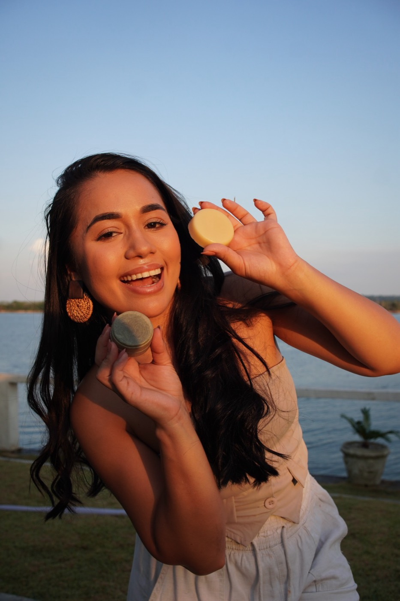
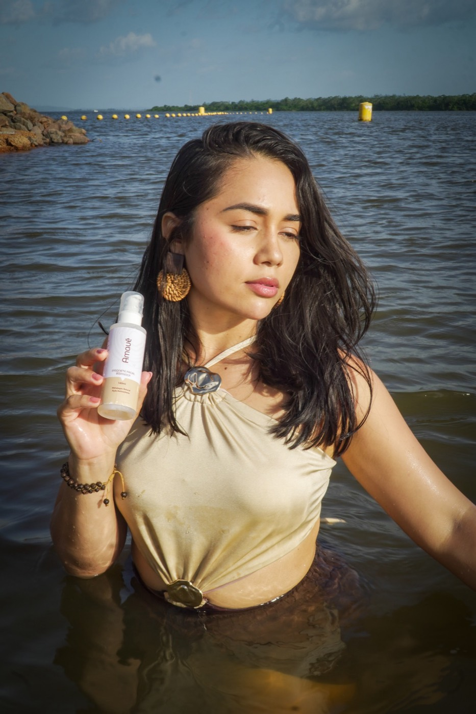
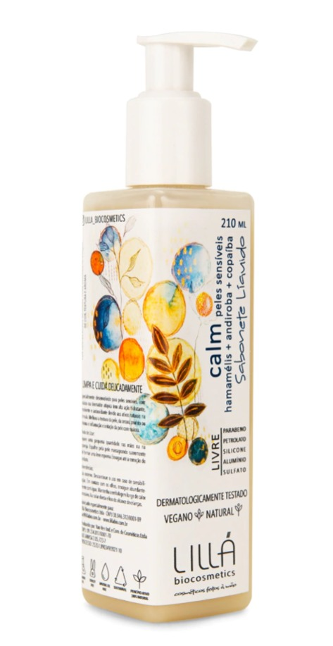
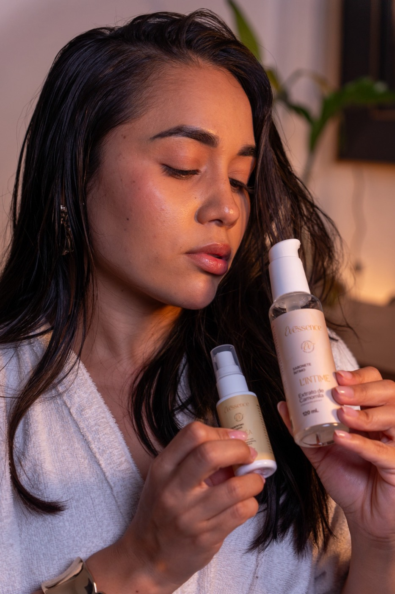
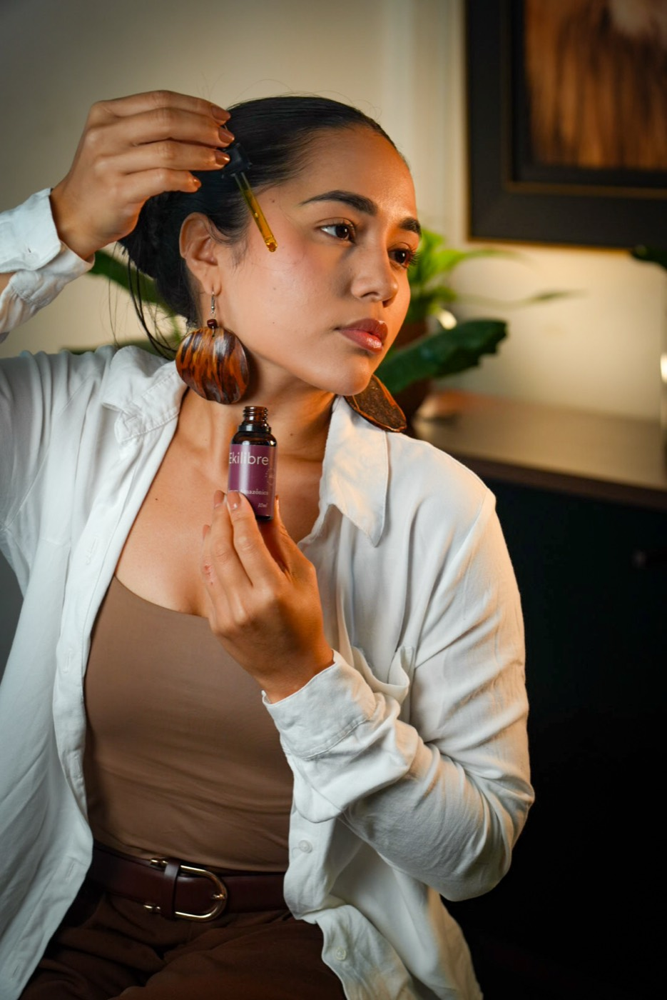
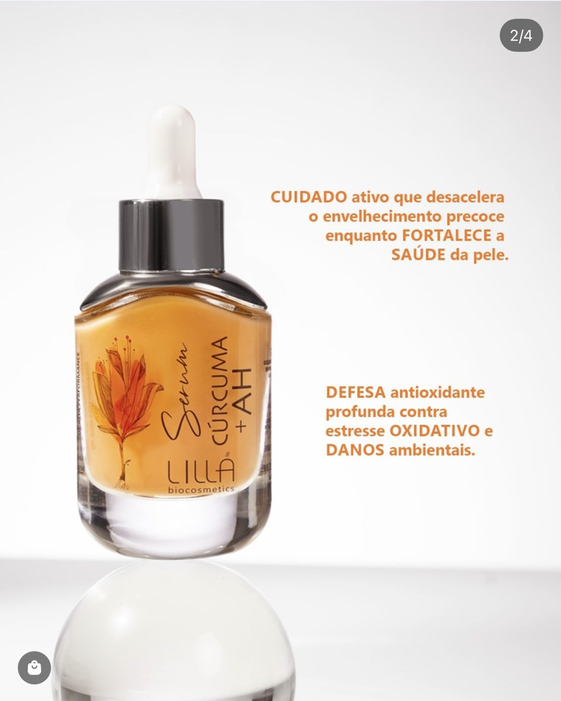

× Juliana Araújo · UGC
Cuidado de vó,
ativo de alta
performance.
Ritual de 2 passos para pele sensível: limpar sem agredir com o Sabonete Calm e iluminar com o Sérum Cúrcuma + AH. Luz dourada, pele real e a memória amazônica da andiroba e da copaíba.


 energia solar
energia solar
Paleta da marca
tirada do site, do rótulo e do sérumOs produtos
a dupla do ritual
SABONETE CALM
R$ 78 · 210 ml
- Sabonete líquido para peles sensíveis
- Hamamélis + andiroba + copaíba
- Livre de parabeno, petrolato, silicone, alumínio e sulfato
- Dermatologicamente testado · vegano · natural
SÉRUM CÚRCUMA + AH
R$ 287 · 30 ml
- Cúrcuma + ácido hialurônico
- Defesa antioxidante contra danos ambientais
- Hidratação, viço e pele mais uniforme
- Natural e vegano de alta performance · feito à mão
Minhas fotos · direção de luz e enquadramento
portfólio Juliana Araújo
Cena 2 · rotina. Roupão branco, plantas, luz de janela. Cenário do banheiro/penteadeira.

Cenas 3–4 · produto. Frasco na altura do rosto, olhos fechados, sensorial.

Cena 4c · conta-gotas. Contra-luz quente, mão no cabelo, close de 3/4.
Cena 1 · gancho. Produto perto do rosto, sorriso, golden hour.
Cena 6 · resultado. Luz dourada no rosto, pele real, território ao fundo.
Referência de gancho
post da marca · carrossel Cúrcuma (2/4)
O que pego do post: frasco herói, fundo claro e frases curtas com palavra em CAIXA ALTA.
A marca fala da cúrcuma como "energia solar que ilumina a pele de dentro para fora". No vídeo, isso vira luz dourada real e a gota âmbar contra o sol. Os textos na tela repetem o estilo: laranja, curtos, 1 a 2 palavras em destaque.
Roteiro cena a cena
áudio · imagem · texto na telaGancho
Áudio
"Andiroba e copaíba. Quem é do Norte sabe: isso aqui é cuidado de vó."
Imagem
Close, luz dourada. Levanta o Calm e aponta o rótulo. Corte seco: sérum entra no quadro.
Solução
Áudio
"Pele sensível não precisa de mil passos. Precisa limpar sem agredir e tratar com ativo que respeita."
Imagem
Plano médio na penteadeira com plantas. Gesto de "dois".
Produto
Áudio
"A dupla da Lillá: Sabonete Calm e Sérum Cúrcuma + AH. Natural, vegano, feito à mão."
Imagem
Flatlay claro com folhas e cúrcuma fresca. Gira o sérum: o âmbar acende.
Ativos e benefícios
Áudio
"Hamamélis, andiroba e copaíba, sem sulfato. Cúrcuma antioxidante + ácido hialurônico que hidrata."
Imagem
Macro da válvula, espuma no rosto, gota âmbar caindo contra a luz.
Praticidade
Áudio
"Lavo, seco, três gotinhas e pronto. Cabe na correria de manhã."
Imagem
Jump cuts: enxágue, toalha, batidinhas do sérum nas maçãs do rosto.
Resultado
Áudio
"Absorve rápido, não pesa. Pele hidratada e com brilho de pele saudável."
Imagem
Janela, golden hour, câmera aproxima. Toque na bochecha, perfil. Sem filtro.
CTA
Áudio
"Bora conhecer: lillabio.com.br, cupom OILILLÁ na primeira compra. Tu já conhecia andiroba no skincare?"
Imagem
Dois produtos perto do rosto, sorriso. Cartela final no flatlay.
Diferenciais, benefícios e regras
Diferenciais
Benefícios a mostrar
- Limpa sem repuxar a pele sensível
- Defesa antioxidante
- Hidratação que não pesa
- Viço e pele mais uniforme
- Rotina de 2 passos
Fazer / evitar
- Pele real, sem filtro de pele
- Rótulo legível e som real do produto
- Promessa milagrosa ou prazo de resultado
- Antes e depois sem autorização
- Outras marcas no quadro